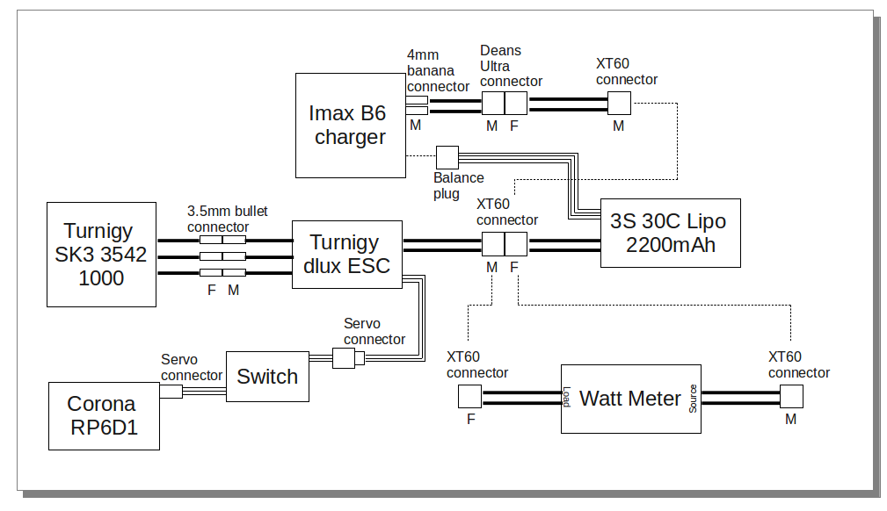
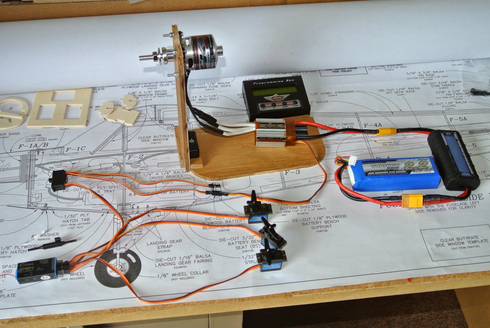

Radio Controlled Aircraft
Since completing the basic structure of the Cub it has taken me some time to decide upon the motor and other equipment. The ElectriCub II design dates from the year 2000 and the suggested motor and ESC also date from that period, being brushed and with one option using a gearbox. However, the label on the front of the kit box suggests a Great Planes brushless motor and ESC, both of which are very expensive (£77.50 for the motor at my local model shop and £83.76 for the ESC on Amazon)! Also, the original design used an 8x4 prop, whereas the new recommendation is an 11x8.5 prop.
My initial reaction was that the 11 inch prop would be out of scale. However, I looked at various photos of real Piper Cubs and looked up its dimensions. Then, by measuring the length of the prop and the wingspan on the photos I concluded that the correct scale for the prop on my model would be ten inches.
The recommended motor, a RimFire .25, was specified as 650W. However I read advice that varied between 40 and 100 watts per pound, and a club member said that he allowed 150W/lb! I estimated the weight of the Cub at 3.5lb and so the motor power range (from the various pieces of advice) was 140 to 525W; all well below the power of the RimFire. But then another club member reminded me that the power in the specification would be based on the highest voltage. Obviously, the current is the limiting factor and so, for a three-cell battery, the RimFire power output would be about 490W and has a kv rating (rpm/volt) of 1000.
To understand things better I estimated the finished weight of the model at 1.59kg (3.5lb) and calculated the wing loading. Then, following Stefan Vorkoetter (based on some 'rules of thumb'), I calculated the stall speed, pitch speed (theoretical speed due to rotation of the propeller) and power required. This resulted in an input power of 440W and a kv of about 500, assuming that a thrust equal to the model weight is required. Then, following Gabriel Staples, I again arrived at a kv of about 500 for an 11x8.5 prop. Finally I went back to first principals and calculated the weight of air moved by an 11x8.5 prop and again came up with a kv of around 500.
This all implies that a smaller motor would be adequate. However, I 'chickened out' and decided to find a motor with the same characteristics as the RimFire .25, but cheaper! I also decided to stick with the 11x8.5 prop. Since the maximum current taken by this motor is 45 amps I decided to increase the rating of the ESC to 55 amps. So, after many hours looking at web sites and talking to club members, I decided on the following:
- Motor - Turnigy SK3 3542 1000kv (£21.69)
- ESC - Turnigy dlux 55A SBEC (£15.74)
- Battery - Turnigy 3S 30C 2200mAh (£9.00)
Although this ESC is a little heavy, I liked the two board design, one board being a switched voltage regulator providing 5.5V. I also bought a SKYRC iMAX B6 charger, having read favourable reviews. All of the above was bought from the UK Warehouse of HobbyKing. The delivery charge of £6.30 included both batteries, the charger with its power supply, ESC programming box, watt meter, receiver and servos, plus connectors and LiPo bag.
The watt meter and the power leads on the ESC had no connectors and the motor connectors on the ESC were 4mm whereas those on the motor were 3.5mm! Since the battery (I bought two) came with a female XT60 connector I bought some of those and spent a morning removing unwanted connectors and adding those that integrated all the components. I found it useful to firstly draw the components and their required connectors. Also, this YouTube video on soldering bullet connectors is useful.
I plan to start by using my existing 35Mhz transmitter, so I bought a Corona RP6D1 dual conversion, synthesised receiver. I also bought some cheap servos, about which I have my doubts, but more of that later. So I somewhat nervously charged one of the batteries (using the 'balanced charge' program with the charge current set to 2A, just under the 1C value) and set up the test rig shown in the photo. The receiver powered up and quickly found the transmitting frequency and it all worked. Even the motor rotated in the right direction! I did have one problem however. When I switched off the receiver, the motor started and ran for a few seconds. It clearly should not do this. I had also bought a programming box for the ESC which I used to reset the device to the factory settings. Having done that all was well. However, it should not be possible to make this happen.
I also used the programming box to look at parameters recorded by the ESC and found that the maximum rpm was 12,422. This seems to be consistent with the kv rating, but might be somewhat more than the model needs. After testing the kit on the bench I used the 'storage' program on the charger to reduce the battery voltage. The recommendation for a storage voltage seems to be 3.8V/cell, making a total voltage of 11.4V. The program seemed to be fixed at 11.1V for storage, so I stopped the discharge at 11.4V.
Anyway, the next step is to modify the motor mount to position the motor correctly and then fit the other components and the servos.